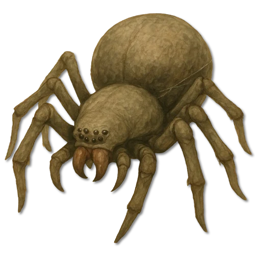
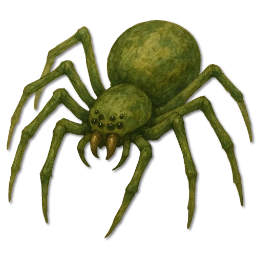
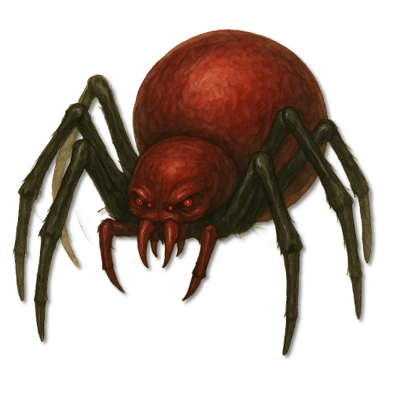
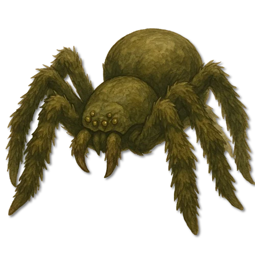

Gebirgsregionen
Höhlengarn
Graubraune Standardform aus Höhlen und Felsspalten; ihr Gift wirkt stark lähmend.
Aleria · Höhlen, Wälder, Tundren und Feuchtgebiete · Archivblatt II / VI
Riesenspinnen · Netzbauende Arthropoden
Geduldige Gebietskontrolleure, deren weitläufige, vibrationssensible Fangnetze zugleich Jagdgerät, Reviergrenze und Schutz ihrer über Generationen genutzten Nester sind.

„Ein frisches Netz ist keine Wand. Es ist bereits der erste Teil der Jagd.“Merksatz der Kundschafter an Höhlenwegen
Sechs Merkmale · Skala 1–10
Die Werte beschreiben eine ausgewachsene Garnspinne in einem vollständig angelegten Netz. Im offenen Gelände sinkt ihre Gefährlichkeit deutlich.
Quelle der Einordnung: Aus Netzbau, Giftwirkung, Körperbau und Verhalten der fünf überlieferten Unterarten abgeleitet
Fünf überlieferte Netzlinien
Die Unterarten unterscheiden sich vor allem durch Lebensraum, Körperfarbe, Beweglichkeit und Giftwirkung. Alle fünf alten Bildtafeln bleiben vollständig erhalten.

Gebirgsregionen
Graubraune Standardform aus Höhlen und Felsspalten; ihr Gift wirkt stark lähmend.

Waldregionen
Die kleinste und beweglichste Linie lebt in tiefen Wäldern und Baumkronen und trägt meist tödliches Gift.

Unterirdische Feuchtregionen
Eine seltene dunkelrote bis schwarze Linie, deren Gift das Blut stark verdünnt und die vorwiegend Blut aufnimmt.

Feuchtregionen
Menschengroße, schnell laufende Sumpfform mit wassertragfähigen Beinen, tiefen Schlammnestern und tödlichem Gift.

Tundren und kühle Hochgebirge
Kälteresistente Linie mit weißem Korpus, schwarzen Beinen und lähmendem Gift; ihre Nester liegen in Eis- und Felsspalten.
Garnspinnen sind klassische Gebietskontrolleure. Sie verfolgen ihre Beute nicht, sondern beanspruchen Raum. Ihre Stärke liegt in Vorbereitung, Geduld und Kontrolle: Wo ihr Netz hängt, wird jede unvorsichtige Bewegung Teil der Falle.
Der glatte, kaum behaarte Chitinpanzer bindet wenig Schmutz und Feuchtigkeit und eignet sich damit für Höhlen, Felsspalten und unterirdische Nester. Der Körper ist massig, die Beine sind lang, aber nicht für schnelle Sprints gebaut.
Die Giftklauen injizieren ein enzymatisches Toxin, das lähmt und das Innere der Beute verflüssigt. Anschließend wird die Nahrung ausgesaugt; Haut und Knochen bleiben im Netz zurück.
Garnspinnen bevorzugen geschützte, stark gegliederte Räume: Höhlen, Felsspalten, Baumkronen und unterirdische Gruben. Offene Ebenen meiden sie, weil dort feste Ankerpunkte für ihre Netze fehlen.
Geeignete Nester werden über Generationen genutzt. Jede neue Spinne erweitert das vorhandene Geflecht, bis ganze Höhlenabschnitte oder Waldwege von mehreren Lagen Seide durchzogen sind.
Das Netz ist Waffe, Falle und Reviermarkierung zugleich. Garnspinnen verlassen ihr Nest meist nur nachts und reagieren unmittelbar auf charakteristische Schwingungen ihrer Seide.
Garnspinnen sind besonders nahe Siedlungen, Höhlenwegen und Waldpfaden eine hohe regionale Bedrohung. Solange sie Wildbestände verringern, werden abgelegene Nester mitunter geduldet. Das ändert sich gewöhnlich erst, wenn Menschen verschwinden.
Im offenen Kampf sind Garnspinnen vergleichsweise langsam. In ihrem Revier setzen sie Netzblockaden, Rückzugswege und lähmendes Gift ein, um Auseinandersetzungen zu verlängern und Eindringlinge schrittweise bewegungsunfähig zu machen.
Wer ein Nest bekämpft, muss zuerst Fluchtwege und tragende Fäden erkennen. Ein unbedachter Schnitt kann weitere Netzlagen lösen und den eigenen Rückweg versperren.
Weibchen sind deutlich größer und dominanter. Nach der Paarung werden Männchen häufig gefressen. Die Brut liegt in großen, gut geschützten Kokons; Jungtiere bleiben zunächst im mütterlichen Netz, bis sie vertrieben oder selbst zur Beute werden.
Die außerordentlich reißfeste Seide ist der wichtigste Rohstoff der Garnspinnen. Gereinigt wird sie zu Garnen, Schnüren und belastbaren Geweben verarbeitet. Das Gift dient Alchemisten als Grundlage für Lähmstoffe und Blutgifte; Panzerreste und Fangzähne werden seltener als Trophäen gehandelt.
Die Ernte ist gefährlich, aber lukrativ. Kundige Sammler bergen bevorzugt verlassene Randfäden, statt in das bewohnte Zentrum eines Netzes vorzudringen.